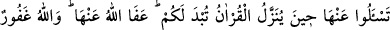
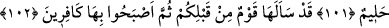

LÜZUMSUZ SORU SORMAK
101. Ey îman edenler! Açıklandığında hoşunuza gitmeyecek şeyleri sormayın.
Eğer Kur’ân indirilirken onları sorarsanız size açıklanır. Allah onları affetmiştir.
Allah çok bağışlayıcıdır, halîmdir.
102. Sizden önce de bir toplum onları sormuş, sonra da onları inkâr eder olmuştu.
“Ey inananlar, açıklandığında hoşunuza gitmeyecek şeyleri sormayın. Eğer Kur’ân
indirilirken onları sorarsanız size açıklanır.”
Rivayete göre “O evi (Kâbe’yi) haccetmek Allah’ın, buna gücü yeten insanlar
üzerinde bir hakkıdır.” (Âl-i İmran, 3/97) âyeti inince Sürâka b. Mâlik (r.a.) “Her yıl
mı?” diye sordu. Rasûlullah (s.a.) Sürâka’ya cevap vermedi. Fakat Sürâka
vazgeçmeyerek aynı soruyu üç defa tekrarladı. Bunun üzerine Rasûlullah (s.a.) şöyle
buyurdular: “Eğer ben “evet” diyecek olsaydım, şüphesiz her yıl hac yapmak sizin
üzerinize vâcib olacaktı. Vâcib olunca da yerine getirmeye güç yetiremeyecektiniz.
Ben sizi serbest bıraktığım sürece, siz de beni rahat bırakın! Sizden önceki
kavimlerin helak olmalarının sebebi, çok soru sormalarından ve peygamberlerine
muhâlefet etmelerinden başka bir şey değildir. Ben size bir şey emrettiğim zaman,
gücünüz yettiği kadar onu yerine getirin. Bir şeyden de nehyedecek olursam, ondan
uzak durun.’”[54] İşte bu olay üzerine bu âyet nâzil oldu.
İbn Abbâs (r.a.)’tan gelen bir rivayet de şöyledir: “Hz. Peygamber (s.a.), bir gün
insanların kendilerini ilgilendirmeyen konularda fazlaca soru sormalarına sinirlenmiş
bir vaziyette konuşma yapıyordu. Sonunda: “Bana sorulan hiç bir soruyu cevapsız
bırakmayacağım.” buyurdu. Bunun üzerine bir adam “Babam nerede?” diye sorunca,
“Cehennemde!” cevabını vedi. Bir başkası “Benim babam kim?” diye sordu. Ona
“Huzâfe” diye cevap verdi. Oysa o adam, başka birisinin oğlu olarak bilinmekteydi.[55]
İşte bu hâdisenin ardından bu âyet nâzil oldu.
Bazı şeyleri sormayın. Çünkü vahiy zamanında bunları soracak olursanız, bunlar size
açıklanır, siz de açıklanan bu şeylerden dolayı üzülüp kederlenirsiniz. Oysa akıllı kişi,
durup dururken kendisini kederlendirecek şeyleri yapmaktan kaçınır.
Begavî şöyle demektedir: Hac konusunda soru soran kişi, her yıl hac yapmasının
emredilmesinden ve kendisi için hiç de iyi olmayacak böyle bir sonuçtan emin olamaz.
Aynı şekilde nesebini soran kişi de başka bir kişiye nisbet edilmekten yani hakiki